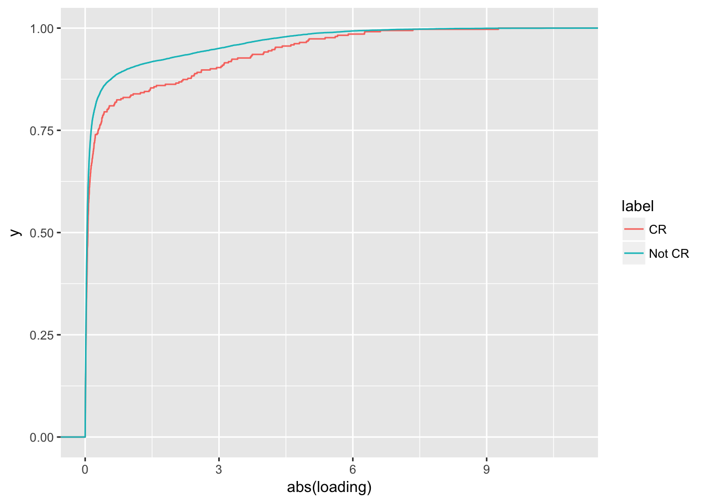

Preliminary analysis of flash and mash result (factor 9)
18 June, 2018
1 Set up
library(ggplot2)
library(mashr)
library(biomaRt)
library(dplyr)
library(topGO)
library(pander)
library(rmeta)
library(reshape2)
panderOptions('knitr.auto.asis', FALSE)
panderOptions('table.split.table', Inf)2 Read data
flash <- readRDS('../output/gtex_flash.rds')
mash <- readRDS('../output/gtex_mash.rds')
eqtl <- read.table('../output/strong_eqtl_names.txt')$V1
## get gtex color
gtex.color <- read.table(url('https://github.com/stephenslab/gtexresults/raw/master/data/GTExColors.txt'), sep = '\t', comment.char = '')
gtex.color <- gtex.color[c(1:6,9:18,21:23,26:30,32,33,35,36,38:53), 1:2]
tissue.color <- as.character(gtex.color[,2])
ntissue <- nrow(gtex.color)3 Factor 9
See details of factor 9 at here
l <- flash$EL
dim(l)## [1] 16069 23l.nine <- l[, 9]
l.five <- l[, 5]
top.tissue.idx <- order(abs(flash$EF[, 9]), decreasing = T)[1 : 3]
hist(l.nine)
top.ten.idx <- order(l.nine, decreasing = T)[1:10]
bottom.ten.idx <- order(l.nine, decreasing = F)[1:10]3.1 Ten eQTL with highest loading
par(mfrow = c(5, 2))
for(i in 1 : 10) {
mash_plot_meta(mash$posterior, top.ten.idx[i], color = meta.colors(lines = tissue.color), main = paste0(i, ': ', eqtl[i]))
}3.2 Ten eQTL with lowest loading
par(mfrow = c(5, 2))
for(i in 1 : 10) {
mash_plot_meta(mash$posterior, bottom.ten.idx[i], color = meta.colors(lines = tissue.color), main = paste0(i, ': ', eqtl[i]))
}4 Gene ontology enrichment analysis
EQTLs with top and bottom loadings (50 respectively) are used as positive set and 500 eQTLs with most modest loading as background set.
annotateEQTL <- function(eqtl, idx, ensembl) {
ensg <- data.frame(t(sapply(eqtl[idx], function(str) {
temp <- strsplit(as.character(str), '_')[[1]]
x <- temp[1]
chr <- temp[2]
s <- temp[3]
return(c(strsplit(x, '.', fixed = T)[[1]][1], chr, s))
})))
colnames(ensg) <- c('ensembl_gene_id', 'eqtl_chr', 'eqtl_start')
ensg$idx <- idx
ensg$ensembl_gene_id <- as.character(ensg$ensembl_gene_id)
re <- getBM(
attributes = c('ensembl_gene_id', 'hgnc_symbol', 'chromosome_name', 'start_position', 'end_position', 'strand', 'go_id', 'name_1006', 'uniprot_genename', 'uniprot_swissprot_accession', 'transcript_start', 'transcript_end'),
filters = 'ensembl_gene_id',
values = ensg[, 1],
mart = ensembl)
re <- inner_join(re, ensg, by = 'ensembl_gene_id')
return(re)
}
genGene2GO <- function(g2g, re) {
gene <- unique(re$ensembl_gene_id)
for(x in gene) {
g2g[[x]] <- re[re$ensembl_gene_id == x, 'go_id']
}
return(g2g)
}
ensembl <- useMart(biomart="ENSEMBL_MART_ENSEMBL", host="feb2014.archive.ensembl.org", path="/biomart/martservice", dataset="hsapiens_gene_ensembl")
positive.idx <- c(order(l.nine, decreasing = T)[1:50], order(l.nine, decreasing = F)[1:50])
control.idx <- order(abs(l.nine), decreasing = F)[1:500]
positive.re <- annotateEQTL(eqtl, positive.idx, ensembl)
control.re <- annotateEQTL(eqtl, control.idx, ensembl)
gene2go <- list()
gene2go <- genGene2GO(gene2go, positive.re)
gene2go <- genGene2GO(gene2go, control.re)
all.gene <- union(unique(positive.re$ensembl_gene_id), unique(control.re$ensembl_gene_id))
gene.list <- factor(as.integer(all.gene %in% unique(positive.re$ensembl_gene_id)))
names(gene.list) <- all.gene
map <- list(BP = 'Biological process', MF = 'Molecular function', CC = 'Cellular component')
for(i in c('BP', 'MF', 'CC')) {
cat('##', map[[i]])
cat('\n')
GOdata <- new("topGOdata", ontology = i, allGenes = gene.list, annot = annFUN.gene2GO, gene2GO = gene2go)
resultFisher <- runTest(GOdata, algorithm = "classic", statistic = "fisher")
allRes <- GenTable(GOdata, classicFisher = resultFisher)
pander(allRes, caption = i)
cat('\n')
cat('\n')
}4.1 Biological process
##
## Building most specific GOs .....## ( 1278 GO terms found. )##
## Build GO DAG topology ..........## ( 3521 GO terms and 7755 relations. )##
## Annotating nodes ...............## ( 392 genes annotated to the GO terms. )##
## -- Classic Algorithm --
##
## the algorithm is scoring 1238 nontrivial nodes
## parameters:
## test statistic: fisher| GO.ID | Term | Annotated | Significant | Expected | classicFisher |
|---|---|---|---|---|---|
| GO:0006812 | cation transport | 8 | 6 | 1.45 | 0.00061 |
| GO:0006810 | transport | 93 | 26 | 16.84 | 0.00482 |
| GO:0006811 | ion transport | 17 | 8 | 3.08 | 0.00487 |
| GO:0051234 | establishment of localization | 97 | 26 | 17.57 | 0.00941 |
| GO:0030534 | adult behavior | 4 | 3 | 0.72 | 0.01994 |
| GO:0045333 | cellular respiration | 7 | 4 | 1.27 | 0.02252 |
| GO:0006732 | coenzyme metabolic process | 11 | 5 | 1.99 | 0.03212 |
| GO:0006099 | tricarboxylic acid cycle | 2 | 2 | 0.36 | 0.03243 |
| GO:0006457 | protein folding | 2 | 2 | 0.36 | 0.03243 |
| GO:0009060 | aerobic respiration | 2 | 2 | 0.36 | 0.03243 |
4.2 Molecular function
##
## Building most specific GOs .....## ( 463 GO terms found. )##
## Build GO DAG topology ..........## ( 738 GO terms and 912 relations. )##
## Annotating nodes ...............## ( 399 genes annotated to the GO terms. )##
## -- Classic Algorithm --
##
## the algorithm is scoring 272 nontrivial nodes
## parameters:
## test statistic: fisher| GO.ID | Term | Annotated | Significant | Expected | classicFisher |
|---|---|---|---|---|---|
| GO:0008324 | cation transmembrane transporter activit… | 9 | 7 | 1.56 | 9.5e-05 |
| GO:0015075 | ion transmembrane transporter activity | 10 | 7 | 1.73 | 0.00027 |
| GO:0022857 | transmembrane transporter activity | 13 | 7 | 2.25 | 0.00250 |
| GO:0022891 | substrate-specific transmembrane transpo… | 13 | 7 | 2.25 | 0.00250 |
| GO:0005215 | transporter activity | 25 | 10 | 4.32 | 0.00471 |
| GO:0005261 | cation channel activity | 3 | 3 | 0.52 | 0.00499 |
| GO:0005216 | ion channel activity | 4 | 3 | 0.69 | 0.01745 |
| GO:0022892 | substrate-specific transporter activity | 18 | 7 | 3.11 | 0.02214 |
| GO:0004616 | phosphogluconate dehydrogenase (decarbox… | 2 | 2 | 0.35 | 0.02955 |
| GO:0004889 | acetylcholine-activated cation-selective… | 2 | 2 | 0.35 | 0.02955 |
4.3 Cellular component
##
## Building most specific GOs .....## ( 288 GO terms found. )##
## Build GO DAG topology ..........## ( 524 GO terms and 1050 relations. )##
## Annotating nodes ...............## ( 427 genes annotated to the GO terms. )##
## -- Classic Algorithm --
##
## the algorithm is scoring 215 nontrivial nodes
## parameters:
## test statistic: fisher| GO.ID | Term | Annotated | Significant | Expected | classicFisher |
|---|---|---|---|---|---|
| GO:0005769 | early endosome | 10 | 6 | 1.69 | 0.0023 |
| GO:0005739 | mitochondrion | 49 | 16 | 8.26 | 0.0030 |
| GO:0042470 | melanosome | 3 | 3 | 0.51 | 0.0046 |
| GO:0048770 | pigment granule | 3 | 3 | 0.51 | 0.0046 |
| GO:0044444 | cytoplasmic part | 198 | 43 | 33.39 | 0.0091 |
| GO:0005773 | vacuole | 26 | 9 | 4.38 | 0.0186 |
| GO:0005768 | endosome | 19 | 7 | 3.2 | 0.0267 |
| GO:0005892 | acetylcholine-gated channel complex | 2 | 2 | 0.34 | 0.0281 |
| GO:0034702 | ion channel complex | 2 | 2 | 0.34 | 0.0281 |
| GO:0045211 | postsynaptic membrane | 2 | 2 | 0.34 | 0.0281 |
It turns out that these top genes are enriched in cation/ion transcportation process.
5 Overview of selected gene sets
df <- data.frame(loading = l.nine[c(positive.idx, control.idx)], label = c(rep('positive', length(positive.idx)), rep('control', length(control.idx))))
ggplot(df) + geom_histogram(aes(x = loading, group = label, fill = label), binwidth = 1) + ggtitle('Histogram of loading')5.1 Posterior mean comparison across top three tissues
df.load <- mash$posterior$result$PosteriorMean[positive.idx, top.tissue.idx]
pairs(df.load, main = 'Pairwise comparison of top three tissues in positive set')df.load <- mash$posterior$result$PosteriorMean[control.idx, top.tissue.idx]
pairs(df.load, main = 'Pairwise comparison of top three tissues in control set')So, it seems that the ones with strong loading on factor 9 are driven by tissue specificity but not strong correlation between these top tissues, which is the same as factor 5.
5.2 Posterior effect size of control eQTLs
random.idx <- sample(control.idx, 10, replace = F)
par(mfrow = c(5, 2))
for(i in 1 : 10) {
mash_plot_meta(mash$posterior, random.idx[i], color = meta.colors(lines = tissue.color), main = paste0(i, ': ', eqtl[i]))
}6 Transport (TSPT)
GO term ‘GO:0006812’ and ‘GO:0006811’ are used (represent cation transport and ion transport)
6.1 Loading
Contrast eQTL in cation/ion transport with the ones unrelated to cation/ion transport on the loading of factor 9.
re.go <- read.table('../output/strong_eqtl_annotated.txt.gz', header = T)
re.go.dup <- duplicated(re.go[, c('ensembl_gene_id', 'go_id')])
re.go <- re.go[!re.go.dup, ]
cr.gene <- re.go[re.go$go_id == 'GO:0006812' | re.go$go_id == 'GO:0006811' , 'idx']
tspt <- rep('Not TSPT', length(l.nine))
tspt[unique(cr.gene)] <- 'TSPT'
df <- data.frame(loading = l.nine, label = tspt)
ggplot(df, aes(x = abs(loading), color = label)) + stat_ecdf()ks.test(abs(df$loading[df$label == 'Not TSPT']), abs(df$loading[df$label == 'TSPT']), alternative = 'g')##
## Two-sample Kolmogorov-Smirnov test
##
## data: abs(df$loading[df$label == "Not TSPT"]) and abs(df$loading[df$label == "TSPT"])
## D^+ = 0.049035, p-value = 0.4894
## alternative hypothesis: the CDF of x lies above that of ywilcox.test(abs(df$loading[df$label == 'Not TSPT']), abs(df$loading[df$label == 'TSPT']), alternative = 'l')##
## Wilcoxon rank sum test with continuity correction
##
## data: abs(df$loading[df$label == "Not TSPT"]) and abs(df$loading[df$label == "TSPT"])
## W = 1164800, p-value = 0.3035
## alternative hypothesis: true location shift is less than 0The result does NOT support the hypothesis that the eQTLs with strong loading on factor 9 (most likely to be tissue-specific eQTLs in top tissue, i.e. skeletal muscle) are enriched in cation/ion transportation process.
6.2 Effect size
Contrast effect size
df <- data.frame(mash$posterior$result$PosteriorMean[, ])
df.se <- data.frame(mash$posterior$result$PosteriorSD[, ])
col <- colnames(df)
df.sig <- data.frame(abs(df) > df.se * 1.96)
df.sig$label <- tspt
df.sig <- melt(df.sig, id.vars = 'label')
ggplot(df.sig) +
geom_bar(aes(x = variable, group = value, color = value), position = "fill") +
facet_grid(label~.) +
scale_fill_manual(values = tissue.color, guide = FALSE) +
theme(axis.text.x = element_text(angle = 90, hjust = 1, vjust = 0.5, color = tissue.color)) +
ggtitle('Proportion of non-zero effect gene')df.prop <- df.sig %>% group_by(variable, label) %>%
summarise(prop = sum(value) / length(value))
df <- data.frame(TSPT = df.prop$prop[df.prop$label == 'TSPT'], NTSPT = df.prop$prop[df.prop$label == 'Not TSPT'], tissue = df.prop$variable[df.prop$label == 'TSPT'])
ggplot(df) + geom_point(aes(x = NTSPT, y = TSPT, color = tissue)) +
scale_color_manual(values = tissue.color, guide = FALSE) + geom_abline(slope = 1, intercept = 0) +
ggtitle('Proportion of non-zero effect gene (TSPT vs not TSPT)')Overall, genes involved in cation/ion transport does NOT tend to have non-zero posterior effect (95% credible interval).
7 Cellular respiration (CR)
GO term ‘GO:0055114’ is used (represent oxidation-reduction process)
7.1 Loading
Contrast eQTL in cellular respiration with the ones unrelated to cellular respiration on the loading of factor 9.
cr.gene <- re.go[re.go$go_id == 'GO:0055114', 'idx']
cr <- rep('Not CR', length(l.nine))
cr[unique(cr.gene)] <- 'CR'
df <- data.frame(loading = l.nine, label = cr)
ggplot(df, aes(x = abs(loading), color = label)) + stat_ecdf()
ks.test(abs(df$loading[df$label == 'Not CR']), abs(df$loading[df$label == 'CR']), alternative = 'g')##
## Two-sample Kolmogorov-Smirnov test
##
## data: abs(df$loading[df$label == "Not CR"]) and abs(df$loading[df$label == "CR"])
## D^+ = 0.099152, p-value = 0.001386
## alternative hypothesis: the CDF of x lies above that of ywilcox.test(abs(df$loading[df$label == 'Not CR']), abs(df$loading[df$label == 'CR']), alternative = 'l')##
## Wilcoxon rank sum test with continuity correction
##
## data: abs(df$loading[df$label == "Not CR"]) and abs(df$loading[df$label == "CR"])
## W = 2384500, p-value = 0.0001641
## alternative hypothesis: true location shift is less than 0It seems that factor 9 is also associated with cellular repiration. Namely, genes invloved in cellular respiration tend to have stronger loading on factor 9.
7.2 Factor 9 vs. factor 5
df.sum <- data.frame(l5 = l.five, l9 = l.nine, cr = cr, tspt = tspt)
ggplot(df.sum) + stat_ecdf(aes(x = abs(l5), color = cr))ggplot(df.sum) + stat_ecdf(aes(x = abs(l5), color = tspt))ggplot(df.sum) + stat_ecdf(aes(x = abs(l9), color = cr))ggplot(df.sum) + stat_ecdf(aes(x = abs(l9), color = tspt))ggplot(df.sum) + stat_ecdf(aes(x = abs(l5), color = paste(cr, tspt, sep = ' & ')))ggplot(df.sum) + stat_ecdf(aes(x = abs(l9), color = paste(cr, tspt, sep = ' & ')))ggplot(df.sum) + geom_point(aes(x = l5, y = l9), alpha = .3) + facet_wrap( ~ paste(cr, tspt, sep = ' & '))
In summary, it seems that factor 5 also captures the transport function. The top genes in factor 9 has something to do with cation/ion transport but when comparing the loading on factor 9 between related genes and the rest, the result is not significant.